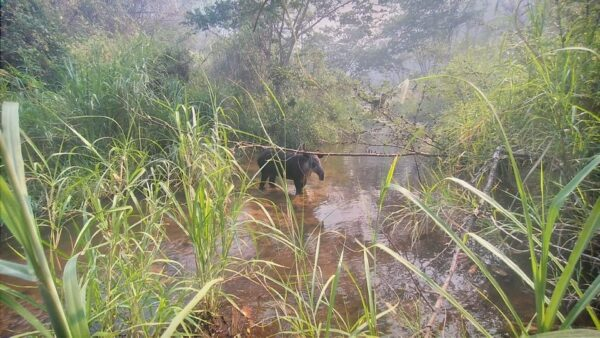
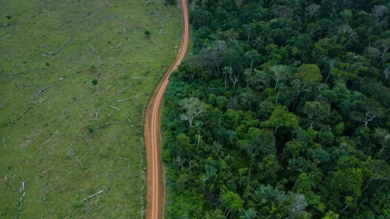
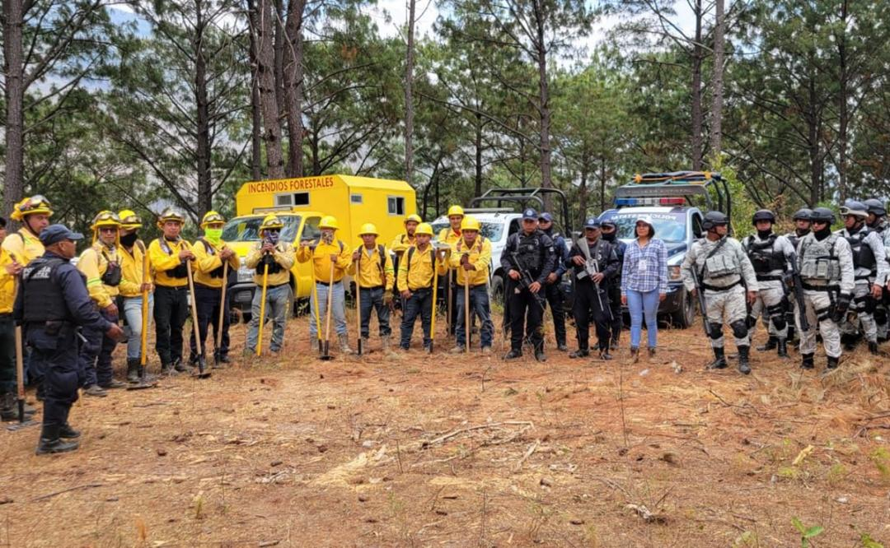
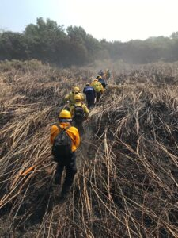
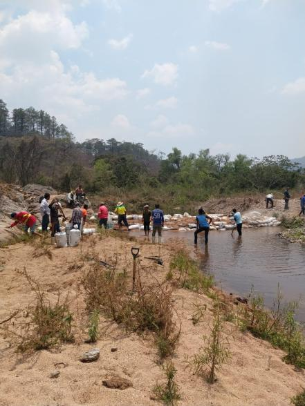
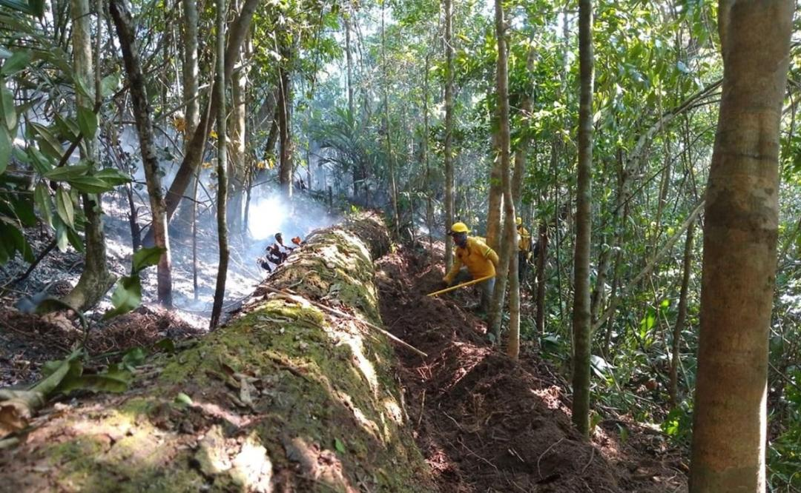

Apagafuegos y voluntarios que combaten incendios forestales en la Reserva de la Biósfera de El Triunfo, documentaron mamíferos, reptiles y otros animales silvestres, refugiándose en arroyos para huir así de los siniestros que azotan ese macizo forestal, esto en la Sierra Madre de Chiapas.
La cantidad de árboles que se perdieron en los bosques tropicales de Brasil y Colombia disminuyó drásticamente el año pasado debido a la acción política, según un nuevo análisis.

Brasil y Colombia reducen drásticamente sus niveles de deforestación
Las pérdidas globales aumentaron un 25%, principalmente debido a los incendios forestales en Canadá.

Resguardadas por la GN, ingresan brigadas a combatir incendio en comunidades triquis de Oaxaca en conflicto
El gobierno estatal explicó que para “garantizar la integridad de los combatientes” se estableció una mesa de diálogo entre las organizaciones MULTI y MULT, lo que permitió poner en marcha la atención al siniestro.

El Chiapas que se incendia
Este año, los incendios se han acercado a la capital, con el fuego que ha afectado al Cerro Mactumatzá, a Meyapac, en Ocozocoautla, y al Boquerón en Suchiapa. La principal amenaza para las reservas de Chiapas son los incendios, seguido por la deforestación.

Los incendios activos se mantienen en los parajes de Las Guayabitas y entre Mono Pelado y Los Pericos
el helicóptero de la Sedena realizó tres viajes para descargar el agua, pero no le atinó a ningún punto del fuego. Es un helicóptero grande y el espacio en la selva es reducido e impide ejecutar las maniobras.

Voluntarios de Oaxaca buscan que incendios no lleguen a bosques de niebla en selva de Los Chimalapas
Comuneros zoques estiman que el fuego que inició el pasado 24 de marzo ya ha consumido más de 10 mil hectáreas de pino ocote y pino encino, y ha dejado afectaciones a la fauna local.